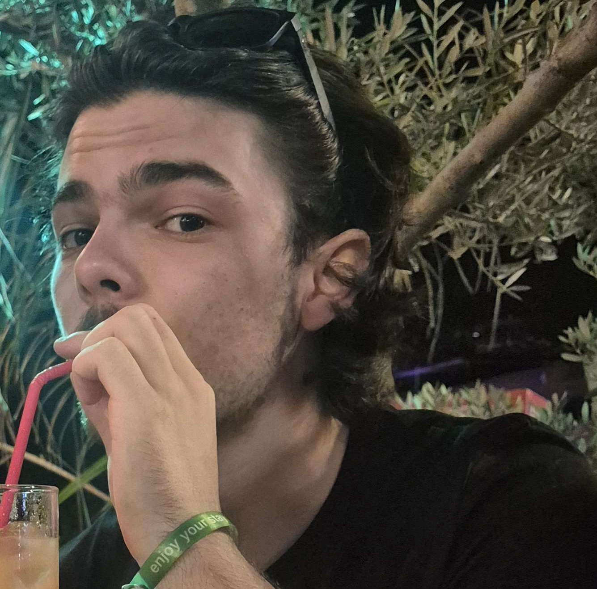
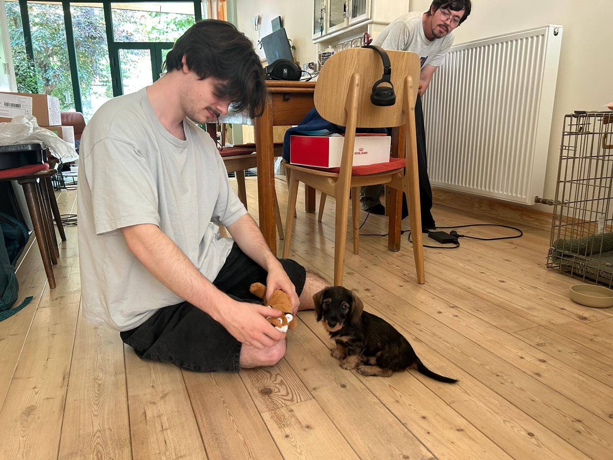

Oscar Slosse
Biografie
Ik ben 22 jaar en van Belgische afkomst. Ik groeide op in België en ben altijd omringd geweest door creativiteit en technologie. Van jongs af aan was ik gefascineerd door digitale werelden en verhalen die mensen meeslepen in een andere realiteit.
Momenteel werk ik als barman in de horeca, waar ik dagelijks in contact kom met allerlei mensen. Die job heeft me geleerd om sociaal, flexibel en stressbestendig te zijn. Ik haal energie uit het creëren van een aangename sfeer en het snel inspelen op wat mensen nodig hebben.
Naast mijn werk studeer ik en ontwikkel ik mezelf verder in de digitale wereld. Ik ben geïnteresseerd in webdesign, game design en alles wat te maken heeft met het creëren van ervaringen. Op lange termijn wil ik mij specialiseren in game design, met een specifieke focus op horror games. Ik ben gefascineerd door hoe sfeer, spanning en geluid samenkomen om een onvergetelijke beleving te creëren voor spelers.

